打印函数有两个一个是print一个是Debug
日常中最常用的是Debug函数,Debug.Log()可以在普通类中使用，但print需要继承MonoBehaviour才能使用
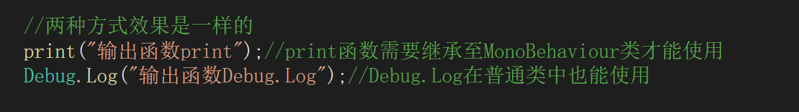在unity脚本中最先执行的函数时Reset函数，它在脚本第一次挂载到游戏物体上时就会执行
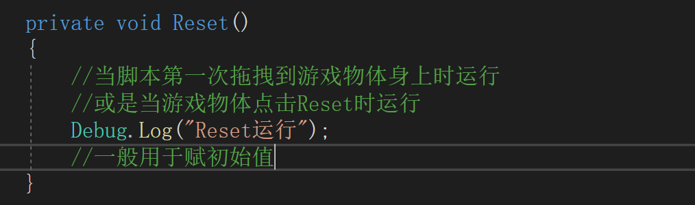当点击脚本右上角的三个点中的Reset选项也会执行函数的Reset方法
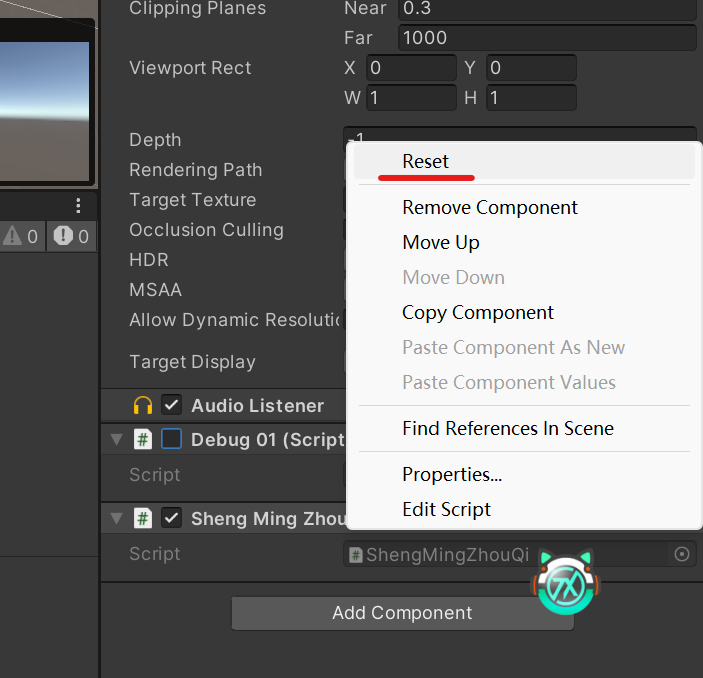Reset函数主要用来将脚本中的一些变量赋初始值
Awake函数是游戏场景初始化时执行的,当游戏物体通过Instantiate创建后也会执行
在脚本生命周期内只会运行一次
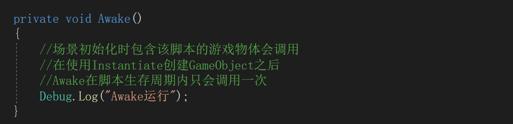OnEnable在Awake之后执行，只要游戏物体或脚本被激活就会执行一次
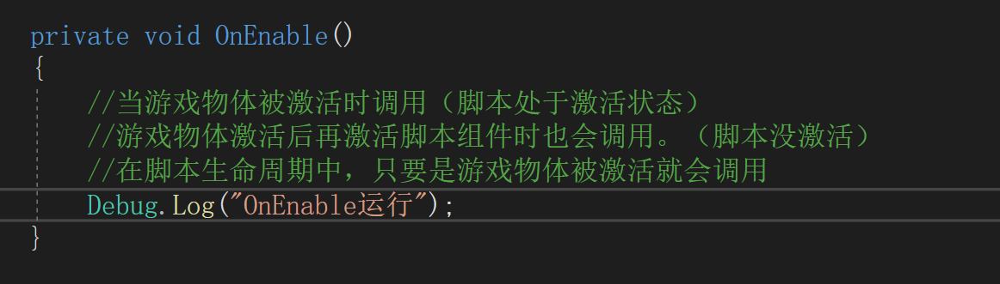常用的初始化函数，在OnEnable之后执行，脚本生命周期内只会执行一次
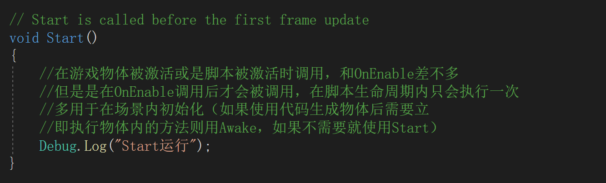如果一个脚本中调用了另一个脚本的变量，通过Start对另一个脚本的变量进行赋值，那个赋值的脚本的Start方法会先于被赋值的脚本的Start方法
只有两个脚本处于同一个物体才会这样。如果两个游戏物体隔得太远或是电脑性能问题就不会这样。
只有两个脚本同时加载外部赋值和内部的Start才能有明确的先后循序，否则受外部影响，先后循序不确定（大多数情况下，外部赋值会慢于内部start赋值）
变量声明直接赋值>检查面板赋值>Awake>OnEnable>Start>外部赋值（如果电脑性能强能同时加载到两个脚本，外部赋值会快于Start）
这两个方法都是每帧执行一次LateUpdate在Update之后执行，多用于监测Update处理Update处理后的数据
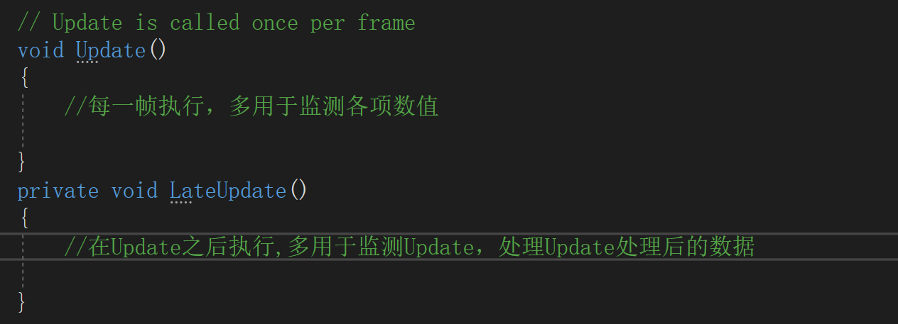OnDisable方法会在脚本失去激活时运行一次，运行正好和OnEnable相反
当项目被打包成应用程序后关闭才会执行，在Unity中测不出来
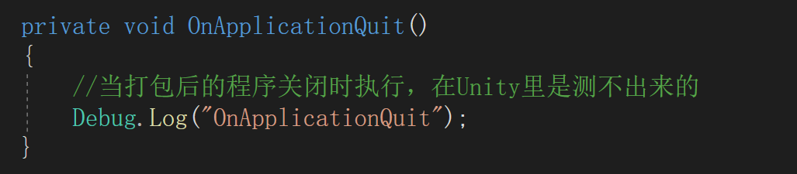当游戏物体被销毁时执行。
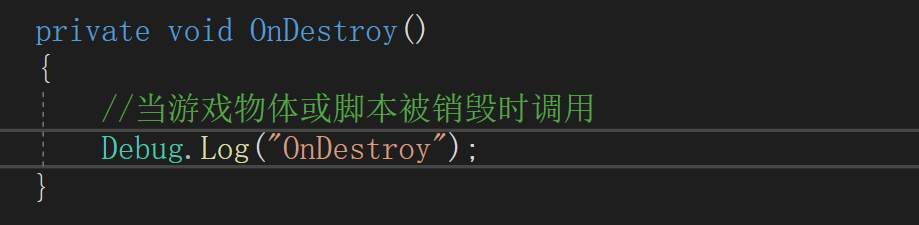还可以直接通过Find("游戏对象名")来查找，直接使用的Find是Object中方法，GameObject中的Find是继承至Component中的方法，所以使用GameObject点出来的Find查询方法要丰富很多。
通常使用GameObject中的Find，因为GameObject中的Find可以针对对象名、标签名、层级或组件类型进行查询。而Object中的Find只能针对组件类型进行查询
常用的三种方式就是通过GameObject对象中的GetComponent方法进行获取，可以针对自身或是子对象、父对象来获取
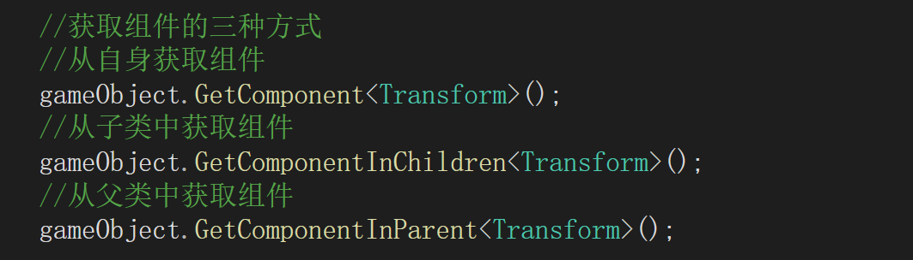Transform组件是所有的游戏物体都必须有的组件，无法销毁，只能跟着游戏物体一起销毁
Transform组件中主要包含游戏物体的坐标旋转角度以及大小
| 属性名 | 说明 |
| name | Transform组件中的name属性存储的是当前Transform所挂载的游戏对象的名称 |
| tag | Transform组件中的tag属性存储的是当前Transform所挂载的游戏对象的标签名 |
| childCount | childCount属性存储的是当前Transform所挂载的游戏对象的子对象数量 |
| position | position属性存储当前Transform所挂载的游戏对象的世界坐标 |
| rotation | rotation属性存储当前游戏对象的旋转角度（用四元数表示的旋转角度） |
| eulerAngles | eulerAngles属性存储的是当前游戏对象的旋转角度（以度数为单位，用欧拉角表示） |
| parent | parent属性存储的是当前游戏对象的父对象 |
| localPosition | localPosition存储当前游戏物体相对于父类的坐标 |
| localRotation | localRotation存储当前游戏物体相对于父对象的旋转（四元数） |
| localEulerAngles | localEulerAngles存储当前游戏物体相对于父对象的旋转（欧拉角） |
| localScale | localScale存储当前游戏物体相对于父对象的大小 |
Transform中查询子对象的方法
| 方法名 | 说明 |
| Find("子对象名称") | Transform组件也有自己的Find方法，用于查询自身的子对象 |
| GetChild(下标) | Transform组件可以通过下标查询子对象，自身也在里面排在最后一个下标 |
| GetSiblingIndex() | 查询自身下标，可以配合上面的方法，在子对象数组中区分出自己 |
Vector2和Vector3基本一样，只是Vector3比Vector多了个z轴，基本会了Vector2也就会了Vector3
Vector2的常用静态变量
| 变量名 | 说明 |
| Vector2.down | (0,-1)表示世界坐标向下的方法 |
| Vector2.left | (-1,0)表示世界坐标向左的方向 |
| Vector2.right | (0,-1)表示世界坐标的右方 |
| Vector2.up | (0,1)表示世界坐标的上方 |
| Vector2.zero | (0,0)表示世界坐标的原点 |
| Vector2.one | (1,1)表示世界坐标的1,1 |
Vector2常用变量
| 变量名 | 说明 |
| magnitude | 向量的长度 |
| sqrMagnitude | 向量的长度平方 |
| normalized | 单位化向量的值 |
常用方法
| 方法名 | 说明 |
| Normalize() | 将向量单位化 |
| Set(float,float) | 设置x和y的坐标 |
静态方法
| 方法名 | 说明 |
| Angle(Vector2,Vector2) | 返回两个向量的夹角 |
| ClampMagnitude(Vector2,float) | 返回长度不大于限制长度的向量 |
| Distance(Vector2,Vector2) | 返回两个向量之间的距离 |
| Dot(Vector2,Vector2) | 返回两个向量之间的点乘（x*x+y*y） |
| LerpUnclamped(Vector2 a, Vector2 b, float t) | 插值运算，即a到b的进度t时的数值返回值为a+(b-a)*t，会在(a, b)之外 |
| Lerp(Vector2 a, Vector2 b, float t) | 插值运算，即a到b的进度t时的数值 返回值为a+(b-a)*t，不会在(a, b)之外 |
| Scale(Vector2, Vector2) | 叉乘(x*x, y*y) |
| Max(Vector2, Vector2) | 返回两个向量中更长的一个向量（不是比大小，而是取两个向量中x和y的最大值重新组成一个向量） |
| Min(Vector2, Vector2) | 返回两个向量中更短的一个向量（不是比大小，而是取两个向量中x和y的最小值重新组成一个向量） |
| MoveTowards(Vector2,Vector2,步频) | 朝一个方向按一定步频移动 |
| SmoothDamp(Vector2,Vector2,ref Vector2,float) | 平滑阻尼，朝着一个方向移动，ref的才是方向，float是阻尼值，越大接近目标的速度越慢，先快后慢的形式。 |
获取预设好的按键检测
| 方法名 | 说明 |
| Input.GetAxis(string) | 检测获取的按键是否按下，返回float类型由0到1或-1，循序渐进。 |
| Input.GetAxis(string) | 检测对应按键是否按下，返回float类型，直接返回1或-1，不会循序渐进。 |
| Input.GetAxis(string) | 检测对应按键是否按下，返回float类型，直接返回1或-1，不会循序渐进。 |
| Input.GetButton(string) | 检测对应按键是否持续按下，与GetAxis不同，GetButton返回的是bool值 |
| Input.GetKey(KeyCode) | 检测单一按键是否持续按下，返回bool值 |
| Input.GetMouseButton(int) | 检测鼠标对应按键是否按下，0（左键），1（右键），3（中键，就是滚轮） |
预设的按键可以在上图所示的位置查看，unity官方还预留了一些位置让玩家进行修改。
SendMessage可以和其它组件进行通信，通过方法名进行调用
SendMessage可以分为三类
| 方法名 | 说明 |
| SendMessage("函数名","参数",SendMessageOptions) | 和GameObject自身的Scripts通信 |
| BroadcastMessage("函数名","参数",SendMessageOptions) | 自身和子Object的Script通信 |
| SendMessageUpwards("函数名","参数",SendMessageOptions) | 自身和父Object的Script通信 |
常用的SendMessage如上表所示
在形参中的SendMessageOptions是可有可无的，并不是必须携带的。这个参数有两钟，SendMessageOptions.RequireReceiver //如果没有找到相应函数，会报错(默认是这个状态).SendMessageOptions.DontRequireReceiver //即使没有找到相应函数，也不会报错，自动忽略
其中第二个形参也不是必须携带的，如果调用的方法没有参数就不需要填写
第一个形参是必须的，是以字符串形式的方法名。需要注意大小写。
动画机常用参数和方法
animator.Play("动画名");播放对应名称动画
animator.speed;修改动画播放速度
animator.SetFloat("状态名",float);修改对应状态的数值
animator.SetIntegr("状态名",int);修改对应状态的数值
animator.GetFloat("状态名");获取对应状态的数值
animator.CrossFade("动画名",float);播放对应动画，但有过渡时间。和play不同，play是一帧转换。过渡的时间越大，过渡越慢。（并不是精确的时间）
animator.CrossFadeInFixedTime("动画名",float);这个方法与上面那个方法一样用于过渡，但这个方法是一个精确的时间过渡
Time.deltaTime：完成上一帧所用的时间（因为这一帧还在运行无法计算，所以是上一帧）
Time.fixedDeltaTime：执行物理或者其他固定帧率更新的时间间隔
Time.fixedTime：自游戏启动以来的时间（以FixedDeltaTime帧率更新的时间间隔累积计算的）
Time.time：自游戏开始以来的时间（以Time.deltaTime累积来的）
Time.realtimeSinceStartup：游戏开始以来的实际时间
Time.smoothDeltaTime：经过平滑处理的Time.deltaTime时间
Time.timeScale：时间流逝的标度，可以用来慢放动作
Time.timeSinceLevelLoad：自加载上一个关卡以来的时间（和游戏开始以来的时间差不多）
常用静态变量
| 名称 | 说明 |
| Mathf.Deg2Rad | 度到弧度换算常量 |
| Mathf.Rad2Deg | 弧度到度换算常量 |
| Mathf.Infinity | 正无穷大的表示形式 |
| Mathf.NegativeInfinity | 负无穷大的表示形式 |
| Mathf.PI | 圆周率 |
常用静态函数
| 名称 | 说明 |
| Mathf.Abs(float) | 取绝对值 |
| Mathf.Acos(float) | （以弧度为单位）反余弦 |
| Mathf.Floor(float) | 小于或等于value的最大整数 |
| Mathf.FloorToIne(float) | 小于或等于value的最大整数（返回int类型的整数） |
| Mathf.Lerp(float1,float2,float3); | 对float1和float2按float3进行线性插值 |
| Mathf.LerpUnclamped(float1,float2,float3); | 对float1和float2按float3进行线性插值（反插值） |
静态变量
Random.rotation：随机生成旋转度数（以四元数的形式）
Random.rotation.eulerAngles：随机生成旋转角度（欧拉角形式）
Quterion.Euler(Random.rotation.eulerAngles)：欧拉角转四元数
Random.value：随机生成[0,1]之间的浮点数
Random.insideUnitCircle：在（-1,-1）~（1,1）范围内随机生成Vector类型的数
静态方法
Random.Ranage(min,max)：产生随机数，包含min不包含max，如果是浮点型就即包含左又包含右
伪随机数：通过Random.InitState(1)进行设定，之后生成的随机数会固定。
| 方法名 | 说明 |
| OnMouseDown | 鼠标在游戏物体身上点下 |
| OnMouseUp | 鼠标在游戏物体身上按下后抬起（这时可以不再游戏物体身上） |
| OnMouseDrag | 鼠标在游戏物体身上拖拽 |
| OnMouseEnter | 鼠标进入游戏物体范围 |
| OnMouseExit | 鼠标离开游戏物体范围 |
| OnMouseOver | 鼠标在游戏物体身上悬停 |
| OnMouseUpAsButton | 鼠标抬起（必须在游戏物体身上抬起） |
这些方法必须是继承了MonoBehaviour类才能使用
而且使用的游戏物体必须有碰撞体
当一个方法需要暂停一段时间执行，又不会影响他之后的方法执行
我们就可以使用协程来完成
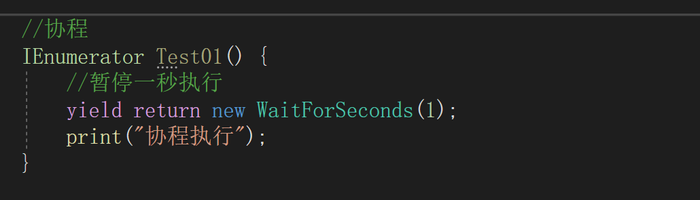协程启动的方法
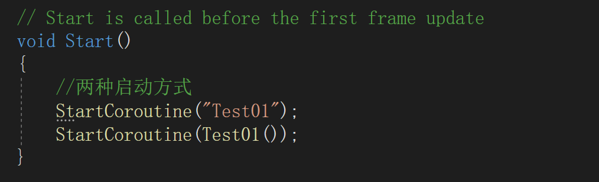协程中的其它方法
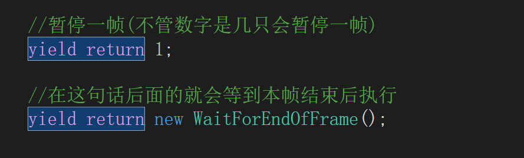停止协程的方法
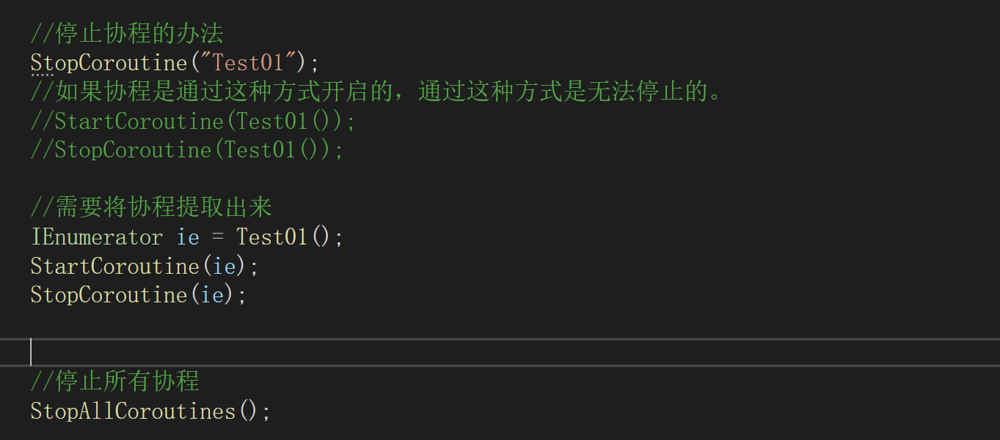Unity为我们封装好了一个延时调用的方法叫Invoke
Invoke的用法比较简单
Invoke("方法名",float); 这里要注意方法名，方法名是用字符串的形式填写所以需要注意大小写。第二个参数是个float类型的变量，用来表示几秒后执行。
除了Invoke方法外还有InvokeRepeating(),InvokeRepeating用来进行循环调用，有三个参数
InvokeRepeating("方法名",float,float); 这里用法基本和Invoke相似，只是比Invoke多了一个参数，最后一个参数表示调动频率，多少秒调用一次的意思。
停止调用的方式有两种一种是直接使用CancelInvoke();直接使用CancelInvoke会导致所有的Invoke函数停止调用。另一种是CancelInvoke("方法名");这种方式可以指定停止某一个函数的延时调用。
IsInvoking("方法名");IsInvoke("方法名")可以查询方法名对应的延时方法是否启动。
动态加载是通过Resources来获取文件夹资源
文件夹必须命名为Resoures
只有Resources文件夹下的资源才会被加载
Resources的常用方法有三种
Resources.Load<类型>("文件名"); 获取文件名对应的组件，文件名需要带路径，填写相对路径就行了，路径从Resources文件夹下开始
Resources.Load("文件名"); 如果不指定类型，返回的就是Object类型，同样的文件名需要带路径
Resources.LoadAll<类型>("路径名"); 这里不需要填写文件名，这个方法是同时加载这个路径下的所有这个类型的资源。
场景的加载需要额外导入API
using UnityEngine.SceneManagement;
切换场景的两种方式
SceneManager.LoadScene(int); 这里填写场景编号，场景的编号可以在File>BuildSettings中查看
SceneManager.LoadScene(string); 这里也可以填写场景名
实现异步加载的同时，控制他的加载进度，当加载完后需要点击才能跳转的功能实现。
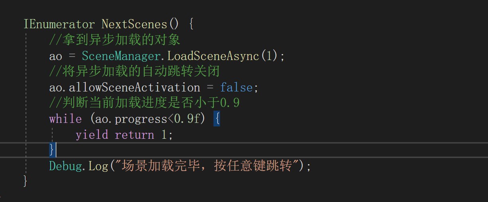AI组件也就是自动寻路组件
自动寻路组件需要添加在需要自动寻路的物体身上
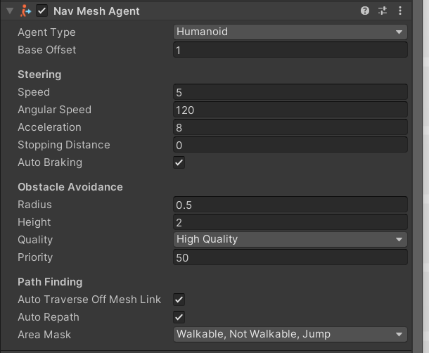| Agent Type | 寻路类型，在 Navigation面板的Agent选项中添加。可以对应不同人物的身高大小或者跳跃距离等设置多个模式。 |
| Base Offset | 偏移值，可以造成寻路组件的中心点偏移。用于人物的中心点与寻路组件不重合时，或是刻意让它不重合时。 |
| Speed | 移动速度 |
| Angular Speed | 旋转速度 |
| Acceleration | 加速度,当人物移动起来的时候是从慢到快的。这个数值越大，从慢到快时间就越短 |
| Stopping Distance | 停止距离，当距离目标点多远的时候停止 |
| Auto Braking | 自动停止，当到达指定位置的时候自动停止。 |
| Radius | 半径 |
| Height | 高 |
| Quality | 质量，质量越低寻路点越少，路径越不平滑，但CPU占用会随之减少。 |
| Priorty | 优先级，当路上有多个寻路组件时，优先级低的会避让优先级高的。 |
| Auto Traverse Off Mesh Link | 场景中是有跳跃点的，当两个位置中间断开但距离可以跳跃。如果不勾选就无法跳跃这种断点的路径。 |
| Auto Repath | 当路线堵塞时是否重新计算路线。 |
在Navigation面板中的Agent和Areas两个属性就不过多介绍
Bake是用于烘焙底线的地方。当点下Bake键的时候就会根据面板上的人物参数来获取所有的寻路点。
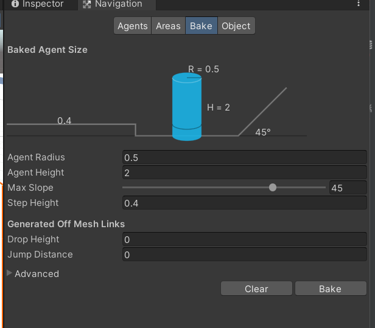| Agent Radius | 人物高度 |
| Agent Height | 人物高度 |
| Max Slope | 最大坡度 |
| Stop Height | 可以上的最高台阶 |
| Drop Height | 可以跳下的最高高度 |
| Jump Distance | 可以跳跃的最大宽度 |
NavMeshObstacle组件
这个组件可以让寻路的地形动态烘焙
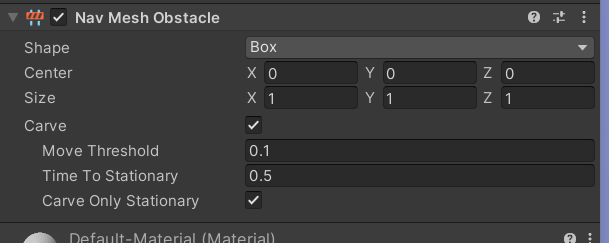当勾选组件中的Carve选项后就会动态更新地形烘焙，多用于地形中动态添加的障碍物，而且障碍物不经常移动
如果障碍物经常移动就不需要勾选，毕竟障碍物隔一会就会自己移开。